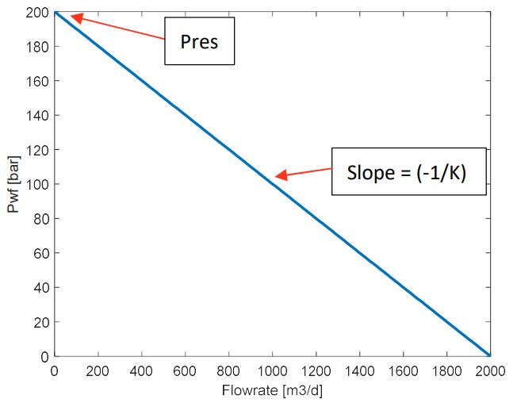
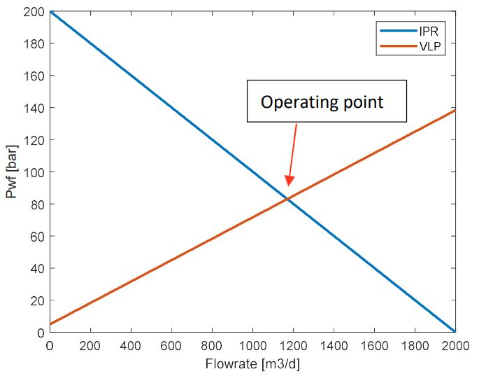
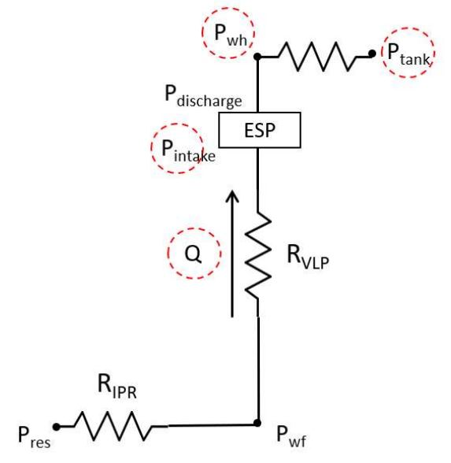
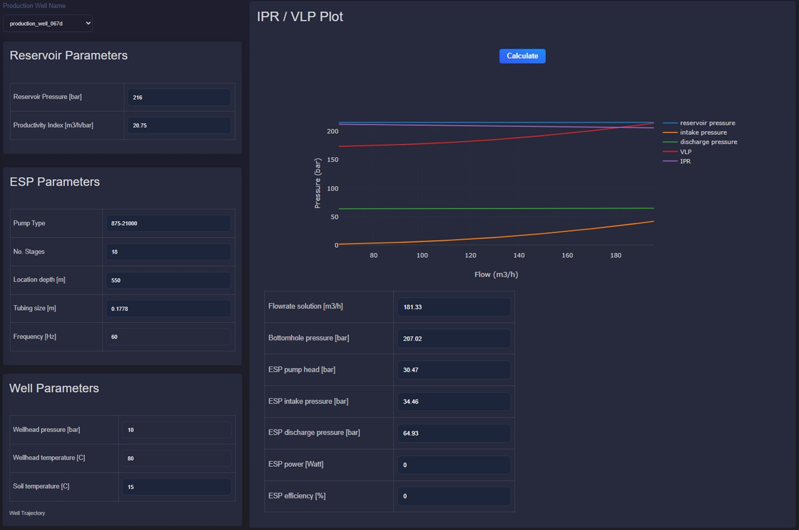

4.2. Production well performance
4.2.1. Description
This application supports real-time and engineering analysis of production well behavior in geothermal reservoirs. It combines IPR, VLP, and nodal analysis.
4.2.2. Inflow Performance Relationship (IPR)
The Inflow Performance Relationship (IPR) describes flowing bottomhole pressure (\(P_{wf}\)) as a function of production rate (\(Q\)). It is used for well productivity analysis and operating point selection.
{kind=link}

In the IPR curve, the y-intercept represents reservoir pressure at zero flow. The slope parameter \(K\) is the productivity index.
where:
\(P_{res}\) is the reservoir pressure
\(P_{wf}\) is the flowing bottomhole pressure
\(Q\) is the flow rate
\(K\) is the productivity index
4.2.3. Vertical Lift Performance (VLP)
Vertical Lift Performance (VLP) describes bottomhole pressure as a function of tubing flow rate. It depends on well depth/trajectory, tubing geometry, fluid properties, and multiphase behavior.
Boundary conditions:
without ESP: wellhead pressure \(P_{wh}\)
with ESP: ESP intake pressure
To calculate the pressure drop along the tubing, two correlations are used based on fluid phase: single-phase or two-phase.
For single-phase flow, pressure loss includes gravitational and friction components.
where:
\(\Delta P_{grav}\) is the gravitational pressure drop
\(\rho_{l}\) is the liquid local density
\(g\) is the local acceleration due to gravity
\(\theta\) is the tubing inclination
The frictional pressure drop is proportional to the square of the flow velocity and inversely proportional to the pipe diameter, as described by the Darcy-Weisbach equation.
where:
\(\lambda\) is the friction factor or flow coefficient
\(u\) is the mean velocity
\(\rho_l\) is the liquid local density
\(D\) is the pipe diameter
In turbulent flow, the friction factor \(\lambda\) depends on Reynolds number \(Re\) and can be solved iteratively or approximated by:
where:
\(Re\) is the Reynolds number
\(u\) is the mean velocity
\(D\) is the pipe diameter
\(v\) is the kinematic viscosity
Thus, total pressure loss is calculated by:
For two-phase flow in inclined pipes, liquid holdup must be included. Holdup depends on flow angle and flow regime (segregated, intermittent, distributed).
4.2.4. Nodal Analysis
Nodal analysis combines IPR and VLP. The intersection defines the operating point and corresponding flow rate.
{kind=link}

The operating flow rate can be found by minimizing the difference between \(P_{wf}\) from IPR and \(P_{wf}\) from VLP.
For systems without ESP, use wellhead pressure \(P_{wh}\) as topside boundary condition. If unavailable, use tank/pipeline pressure with additional pressure-drop corrections. For systems with ESP, use intake pressure.
{kind=link}

In real-time monitoring, discrepancies between measured and calculated \(P_{wf}\) can indicate changing well conditions. If downhole pressure is not available, compare nodal-analysis flow rate with measured flow rate to detect potential additional resistance in the well.
Users can adjust reservoir, well, and ESP parameters to evaluate impact on:
operating flow rate
bottomhole pressure
ESP head, intake/discharge pressure
power and efficiency
{kind=link}
